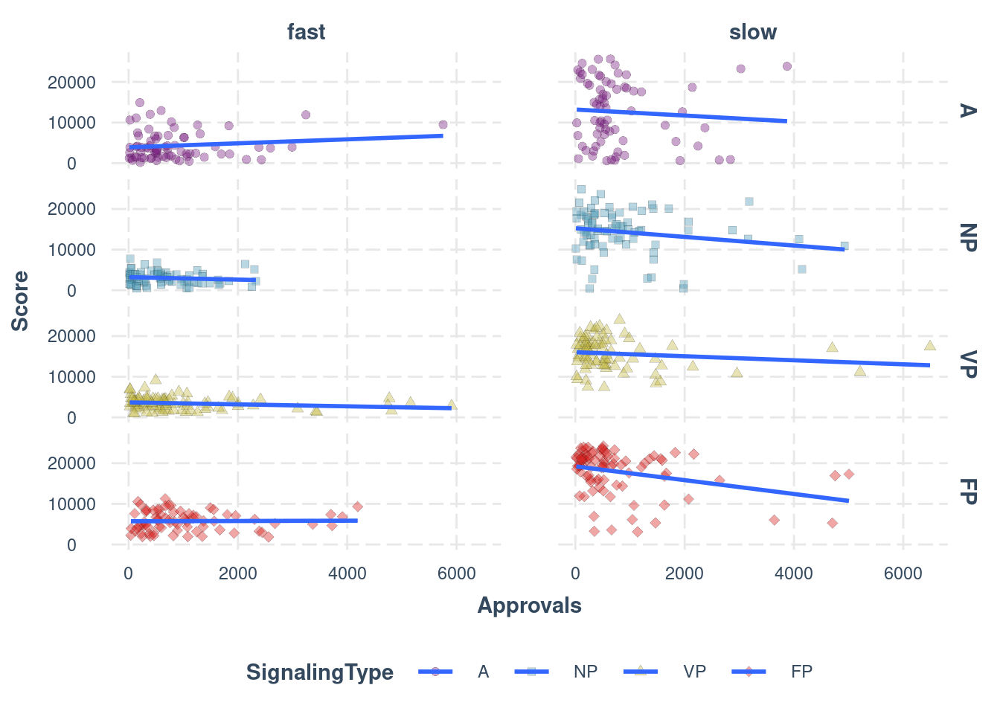
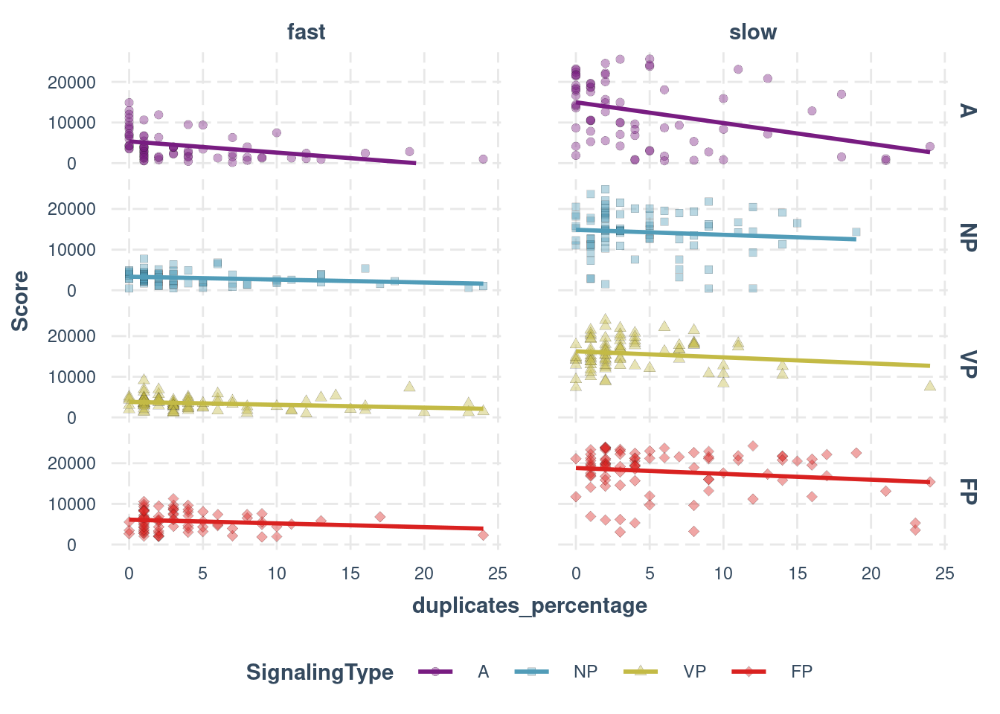
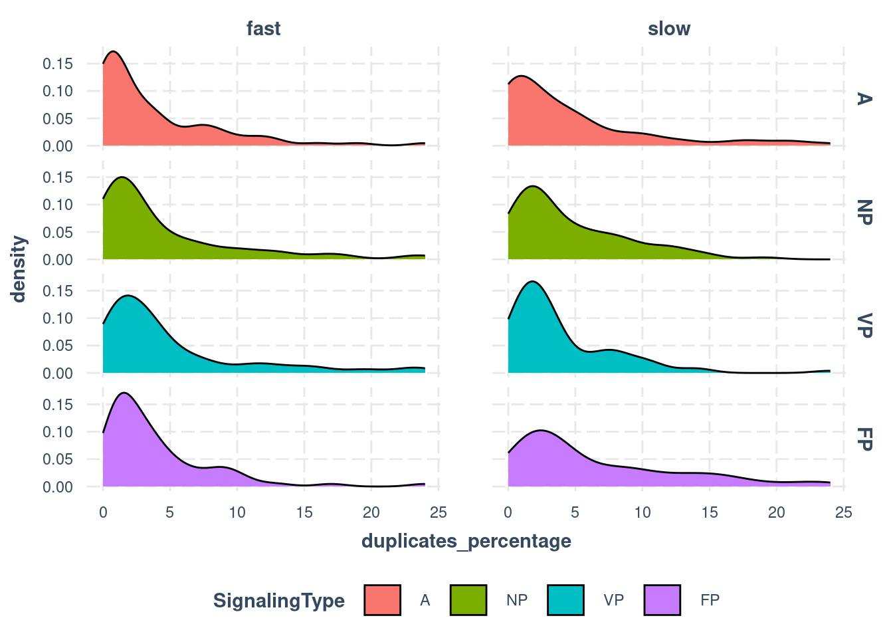
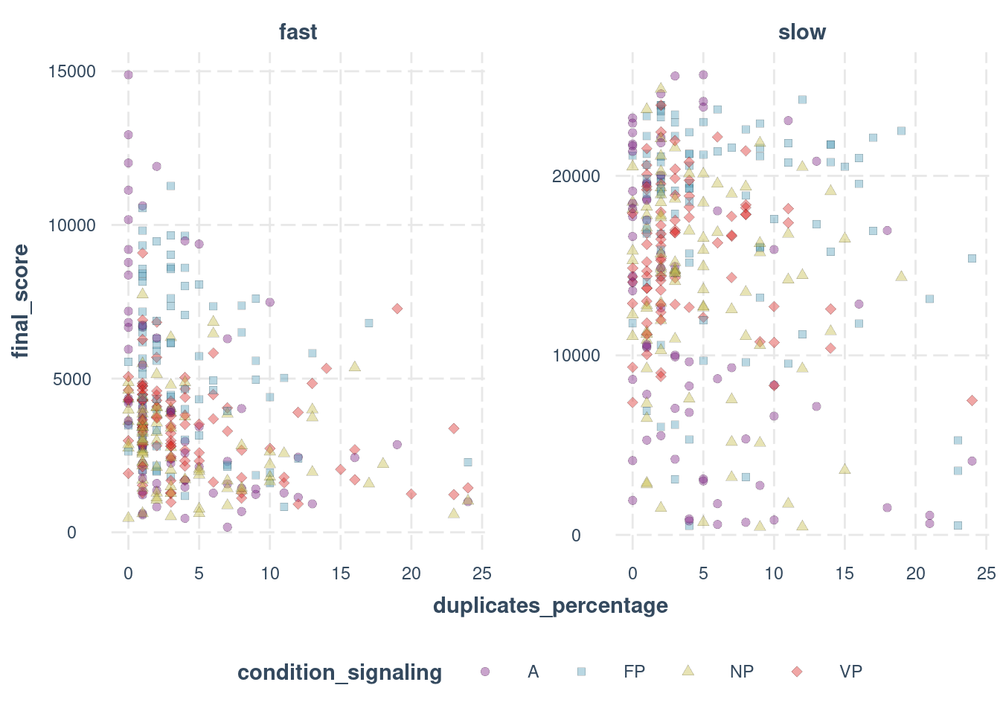

Demographics and data filtering
data_raw <- subj_data_raw
df <- subj_data %>%
mutate(
Participant = as.factor(player_id),
Group = as.factor(group),
Score = as.numeric(final_score),
Age = as.numeric(Age),
Sex = as.factor(Sex),
Approvals = as.numeric(Total.approvals)
)[1] 737
Count excluded participants on each step of data cleaning
[1] 737
[1] “Did not complete the study”
[1] 21
[1] “Have lags”
lags <- nrow(data_raw %>% filter((duplicates_resource_percentage > 5 | time_in_experiment > 15 * 1.05) & (nan_percentage < 5)))
print(lags)[1] 27
[1] “Is it equal to is_valid condition?”
[1] TRUE
[1] “Have more than 25% of duplicates”
duplicates <- nrow(data_raw %>% filter(is_valid == "True") %>% filter(duplicates_percentage >= 25))
print(duplicates)[1] 29
[1] “Is not in the group of 4 or 5 valid participants”
group_size <- nrow(data_raw %>% filter(is_valid == "True") %>% filter(duplicates_percentage < 25) %>%
filter(condition_signaling != 'A') %>% filter(valid_group_size < 4))
print(group_size)[1] 39
[1] “final sample”
[1] 621
[1] 660
nrow(data_raw %>% filter(is_valid == "True", duplicates_percentage < 25, condition_signaling != 'A'))[1] 516
[1] 512
[1] 621
[1] 0.1573948
[1] 116
Approvals
ggplot(df, aes(Approvals, Score, fill = SignalingType, shape = SignalingType)) +
geom_point(alpha = 0.4, size = 2, stroke = 0.1) +
scale_shape_manual(values = c(21, 22, 24, 23)) +
scale_fill_manual(values = colors) +
facet_grid(cols = vars(ResourceSpeed), rows=vars(SignalingType)) +
theme_nice(legend.pos = "bottom") +
ylim(0, 26000) +
geom_smooth(formula = y ~ x, method = 'lm', se=F)
ggplot(df, aes(duplicates_percentage, Score, fill = SignalingType, shape = SignalingType)) +
geom_point(alpha = 0.4, size = 2, stroke = 0.1) +
scale_shape_manual(values = c(21, 22, 24, 23)) +
scale_fill_manual(values = colors) +
facet_grid(cols = vars(ResourceSpeed), rows=vars(SignalingType)) +
theme_nice(legend.pos = "bottom") +
ylim(0, 26000) +
geom_smooth(formula = y ~ x, method = 'lm', se=F, aes(color = SignalingType)) +
scale_color_manual(values = colors) 
Duplicates (time steps when the participant was not moving)
ggplot(df, aes(duplicates_percentage, fill = SignalingType, shape = SignalingType)) +
geom_density() +
facet_grid(cols = vars(ResourceSpeed), rows=vars(SignalingType)) +
theme_nice(legend.pos = "bottom")
data_raw %>%
filter(duplicates_percentage < 25) %>%
ggplot(aes(duplicates_percentage, final_score, fill = condition_signaling, shape = condition_signaling)) +
scale_fill_manual(values = colors) +
scale_shape_manual(values = c(21, 22, 24, 23)) +
geom_point(alpha = 0.4, size = 2, stroke = 0.1) +
facet_wrap(~ condition_resource, scales = "free_y") +
theme_nice(legend.pos = "bottom") +
scale_color_manual(values = colors) 
df %>%
group_by(condition_resource, condition_signaling) %>%
summarise(correlation = cor(duplicates_percentage, final_score, use = "complete.obs", method = 'pearson'))